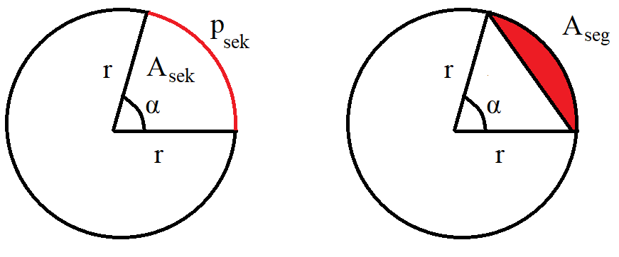

Ympyrä
Contents
Ympyrä#
Ympyrä kuuluu tasogeometrian perusasioihin. Tarkastellaan aluksi ympyrään liittyviä käsitteitä ja laskukaavoja. Sen jälkeen sovelletaan näitä tietoja maapallon pituus- ja leveyspiireihin liittyvissä laskuissa.
Peruskäsitteet#
Ympyrän kehä on niiden samassa tasossa olevien pisteiden joukko, joiden etäisyys määrätystä tason pisteestä (ympyrän keskipisteestä) on yhtä suuri. Ympyrä on kehän rajoittama tason osa. Keskipisteen ja kehällä olevan pisteen välinen jana on säde. Säteen pituus on kuvassa merkitty kirjaimella \(r\) (radius). Kahden kehällä olevan pisteen välinen jana on jänne, ja keskipisteen kautta kulkeva jänne on halkaisija. Halkaisijaa merkitään kuvassa kirjaimella \(d\) (diameter) ja sen pituus on \(d=2r\). Jänne jakaa ympyrän kahteen segmenttiin.
Ympyrän kehän pituus \(p\) (perimeter) on \(p=2\pi r\) ja ympyrän pinta-ala on \(A=\pi r^2\) tai halkaisijan avulla kirjoitettuna \(A=\frac{\pi d^2}{4}\).
Perustelut
Ympyrän kehän ja halkaisijan suhde \(\pi=\frac{p}{2r}\) on tunnettu tuhansia vuosia, joten emme kyseenalaista tai perustele sitä tässä. Ympyrän pinta-alan kaavan voi perustella esimerkiksi seuraavalla tavalla:
jaetaan ympyrä tikkataulun tapaan kapeiksi suikaleiksi
leikataan ympyrä auki säteen suuntaisesti
levitetään suikaleet auki vierekkäin, jolloin ne muodostavat karkeasti suorakulmaisen kolmion
suikaleiden leveys on yhteensä \(r\), ja pisimmän suikaleen pituus on sama kuin ympyrän kehän pituus eli \(2\pi r\)
jos ympyrä jaettaisiin äärettömään moneen, äärettömän kapeaan suikaleeseen, ne muodostaisivat auki levitettynä suorakulmaisen kolmion (merkitty kuvaan punaisella), jonka kateettien pituudet ovat \(r\) ja \(2\pi r\)
suorakulmaisen kolmion pinta-ala on \(A=\frac{1}{2}\cdot \text{kanta}\cdot \text{korkeus}\), joten kuvan tapauksessa \(A=\frac{1}{2} r\cdot 2\pi r = \pi r^2\).
Esimerkki
Miten ympyrän pinta-ala ja kehän pituus muuttuvat, kun ympyrän säde a) muuttuu arvosta 10 cm arvoon 15 cm, b) kolminkertaistuu riippumatta siitä, mikä oli alkuperäinen arvo?
Ratkaisu
a) Uuden ja vanhan pinta-alan suhde on \(\frac{\pi \cdot (15~\text{cm})^2}{\pi \cdot (10~\text{cm})^2}=\frac{15^2}{10^2}^2=2.25\).
Kehän pituuksien suhde on \(\frac{2 \pi \cdot 15~\text{cm}}{2 \pi \cdot 10~\text{cm}}=\frac{15}{10}=1.5\)
b) Merkitään alkuperäistä sädettä \(r\) ja uutta \(3r\).
Nyt pinta-alojen suhde on \(\frac{\pi (3r)^2}{\pi r^2}=\frac{9r^2}{r^2}=9\)
ja kehän pituuksien suhde on \(\frac{2\pi \cdot 3r}{2\pi r}=3\).
Kaksi sädettä jakaa ympyrän kahteen sektoriin. Säteiden väliin jää kaksi keskuskulmaa: \(\alpha\) ja \(360^{\circ}-\alpha\). Yleensä sektorina käsitetään vain se sektori, jonka keskuskulma on pienempi. Keskuskulmaa \(\alpha\) vastaavan kaaren pituus \(p_{\text{sek}}\) on keskuskulmaa vastaava osa koko ympyrän kehästä: \(p_{\alpha}=\frac{\alpha}{360}\cdot 2\pi r\).
Vastaavasti sektorin pinta-ala \(A_{\text{sek}}\) on keskuskulmaa \(\alpha\) vastaava osuus koko ympyrän alasta: \(A_{\text{sek}}=\frac{\alpha}{360}\cdot \pi r^2\).

Segmentin pinta-ala \(A_{\text{seg}}\) saadaan, kun sektorin pinta-alasta vähennetään sen kolmion ala, joka muodostuu kahden säteen ja jänteen väliin. Laskusääntö pätee silloin, kun sektorin keskuskulma on alle 180 astetta. Kolmion pinta-ala on kahden sivun pituuden tulo, jaettuna kahdella ja kerrottuna sivujen välisen kulman sinillä. Siis segmentin alaksi saadaan
\(A_{\text{seg}}=\frac{\alpha}{360}\cdot \pi r^2 -\frac{1}{2}r^2 \sin{\alpha}\).
Esimerkki
a) Kulma \(\alpha\) rajaa ympyrästä sektorin. Ympyrän säde on 1 metri ja sektorin pinta-ala 0.5 neliömetriä. Kuinka suuri on kulma \(\alpha\)?
b) Kulma \(\alpha=30^{\circ}\) rajaa ympyrästä sektorin, jonka kaaren pituus on 5 metriä. Kuinka suuri on ympyrän säde?
Ratkaisu
a) Ratkaistaan kulma yhtälöstä \(\frac{\alpha}{360^{\circ}}\cdot \pi\cdot (1~\text{m})^2 = 0.5~\text{m}^2\):
\(\alpha=360^{\circ} \cdot \frac{0.5~\text{m}^2}{\pi\cdot (1~\text{m})^2}\approx 57.3^{\circ}\)
b) Ratkaistaan säde yhtälöstä \(\frac{30^{\circ}}{360^{\circ}}\cdot 2 \pi\cdot r = 5~\text{m}\):
\(r=\frac{360^{\circ}}{30^{\circ}}\cdot \frac{5~\text{m}}{2\pi}\approx 9.55~\text{m}\)
Ympyrän kehällä olevasta pisteestä lähtevien kahden jänteen välinen kulma on nimeltään kehäkulma \(\beta\) (kuvassa alla vasemmalla). Kehäkulman suuruus on puolet vastaavasta keskuskulmasta \(\alpha\), siis \(\beta=\frac{\alpha}{2}\).
Kun ympyrän ulkopuolelta olevasta pisteestä piirretään ympyrälle tangentit (eli ympyrää yhdessä pisteessä sivuavat suorat), tangenttien väliin jää tangenttikulma \(\beta\). Keskuskulma \(\alpha\) muodostuu, kun tangenteilta piirretään säteet suorassa kulmassa ympyrän keskipisteeseen. Tangenttikulman ja sitä vastaavan keskuskulman summa on \(\alpha+\beta=180^{\circ}\). Summa on peräisin siitä, että ympyrän keskipiste, ympyrän ulkopuolinen piste ja tangenttien sivuamispisteet rajaavat nelikulmion. Minkä tahansa nelikulmion kulmien summa on tunnetusti 360 astetta, ja tässä tapauksessa nelikulmio sisältää kaksi suoraa kulmaa, joten kahden muun kulman summaksi jää 180 astetta.
Eräs käyttökelpoinen laskusääntö ympyrälle on sekanttilause. Sen mukaan minkä tahansa (ympyrän sisä- tai ulkopuolella olevan) pisteen \(P\) kautta kehän pisteiden \(A\) ja \(B\) sekä kehän pisteiden \(C\) ja \(D\) väliin piirretyille jänteille pätee \(PA\cdot PB=PC\cdot PD\)
Sekanttilauseen perustelu
Kuvan kulmat \(\alpha\) ovat yhtä suuret, koska ne ovat ristikulmat. Kuvan kulmat \(\beta\) ovat yhtä suuret, koska ne ovat samaa kaarta (kehän väli CB) vastaavat kehäkulmat. Kolmioiden APC ja DPB viimeistenkin kulmien on oltava yhtä suuret, koska kolmion kulmien summa on aina \(180^{\circ}\) ja kolmioissa on jo kaksi yhtä suurta kulmaa.
Kun kahdessa kolmiossa on yhtä suuret kulmat, kolmiot ovat yhdenmuotoisia ja tällöin niiden sivujen pituuksien suhteet ovat samat:
\(\frac{PA}{PC}=\frac{PD}{PB}\).
Yhtälö voidaan esittää muodossa \(PA\cdot PB = PC \cdot PD\).
Esimerkki
Kuinka suuri on kuvan ympyrän halkaisija \(CD\), kun tiedetään, että \(PC=6\) ja \(PA=PB=2\)?
Ratkaisu
Sekanttilauseen perusteella \(PA\cdot PB=PC\cdot PD\), josta saadaan \(PD=\frac{PA\cdot PB}{PC}=\frac{2\cdot 2}{6}=\frac{4}{6}=\frac{2}{3}\). Halkaisija on siis \(CD=PC+PD=6+\frac{2}{3}=\frac{18}{3}+\frac{2}{3}=\frac{20}{3}\).
Pituus- ja leveyspiirit#
Maapallon pituuspiirit (longitude) tai pituusasteet määritellään kulmina \(\lambda\) sovitun ns. nollameridiaanin suhteen. Nollameridiaanin sijainniksi on vuonna 1884 valittu Greenwichin kuninkaallisen tähtitornin kautta kulkeva pituuspiiri. Pituuspiirit ovat napojen kautta kulkevia isoympyröitä, eli pisimpiä mahdollisia pallon pinnalla kulkevia ratoja.
Leveyspiirit (latitude) tai leveysasteet määritellään kulmina \(\phi\) päiväntasaajalta pohjoiseen tai etelään. Leveyspiirit ovat päiväntasaajan suuntaisia pikkuympyröitä. Päiväntasaajaa lukuunottamatta ne ovat siis lyhyempiä kuin pituuspiirit.
Seuraavat laskuesimerkit pätevät sillä oletuksella, että maapallo olisi todella pallon muotoinen. Oikeasti näin ei ole. Maapallon pyöriminen akselinsa ympäri muokkaa hieman maapallon muotoa siten, että maapallo on aavistuksen litistynyt. Leveyspiireihin liittyy myös ajallista vaihtelua, vaikkakaan se ei vaikuta laskukaavoihin. Pohjoisen napapiirin leveysasteet ovat tällä hetkellä noin \(66^{\circ}~33'~39''\). Napapiiri määräytyy maapallon pyörimisakselin kaltevuuden perusteella, ja se puolestaan vaihtelee säännöllisin väliajoin maan, auringon ja kuun välisten vuorovaikutusten mukaan.
Lyhin reitti maapallolla pisteestä toiseen on kahden pisteen välistä isoympyrää pitkin. Laskuihin sopiva likiarvo isoympyrän pituudelle, eli maapallon ympärysmitalle, on 40 000 km. Maapallon säteelle käytetään yleensä arvoa 6370-6380 km. Laskemalla säteen avulla ympärysmitta kaavalla \(p=2 \pi r\) saataisiin hieman eri arvo. Seuraavissa esimerkeissä liikutaan maapallon pinnalla pysyen joko samalla pituus- tai leveyspiirillä. Laskukaavat, joilla saadaan lyhin etäisyys, kun sekä pituus- että leveyspiiri muuttuu, eivät kuulu tämän opintojakson sisältöihin. Todellisuudessa maapalloon liittyvissä kaavoissa, esimerkiksi karttaohjelmissa, huomioidaan myös maapallon litistynyt muoto.
Esimerkki
Helsinki ja Ateena sijaitsevat likimain samalla pituuspiirillä. Helsingin leveyspiiri on 60° pohjoista leveyttä ja Ateenan 38° pohjoista leveyttä. Mikä on kaupunkien etäisyys?
Ratkaisu
Kaupunkien leveyspiirien välinen kulma on \(\alpha=60^{\circ}-38^{\circ}=22^{\circ}\). Kaupunkien välinen etäisyys on kulmaa vastaava osuus isoympyrän kehän pituudesta \(p\):
\(\frac{22^{\circ}}{360^{\circ}}\cdot 40000~\text{km} = 2440~\text{km}\).
Leveyspiiriä pitkin kuljettaessa matkan pituus riippuu sekä pisteiden pituuspiirien välisestä kulmasta että leveyspiirin sijainnista. Eri leveyspiirithän ovat eri mittaisia. On siis ensin laskettava maapallon ympärysmitta annetun leveyspiirin kohdalla.
Esimerkki
Helsinki ja Oslo sijaitsevat likimain leveyspiirillä 60°. Oslo sijaitsee pituuspiirillä 10.4° ja Helsinki pituuspiirillä 25.0°. Mikä on kaupunkien etäisyys?
Ratkaisu
Lasketaan ensin 60° leveyspiiriä vastaavan pikkuympyrän säde \(r\). Vasempaan kuvaan täydennetylle suorakulmaiselle kolmiolle pätee \(\sin{30^{\circ}}=\frac{r}{R}\), missä \(R=6370~\text{km}\) on maapallon säde. Yhtälöstä saadaan
\(r=R \sin{30^{\circ}}= 6370~\text{km} \cdot \sin{30^{\circ}}=3185~\text{km}\).
Kaupunkien välinen etäisyys \(s\) on nyt pituuspiirien välistä kulmaa \(\alpha\) vastaava osuus pikkuympyrän kehän pituudesta:
\(\alpha=25.0^{\circ}-10.4^{\circ}=14.6^{\circ}\),
\(s=\frac{\alpha}{360^{\circ}}\cdot 2\pi r=\frac{14.6^{\circ}}{360^{\circ}}\cdot 2\pi \cdot 3185~\text{km}=812~\text{km}\).